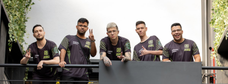
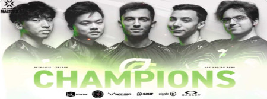

Masters 2022
Pela segunda vez, o Valorant Masters desembarca em Reykjavík, capital da Islândia. Entre os dias 10 e 24 de abril, 12 equipes ao redor do mundo - incluindo as brasileiras LOUD e Ninjas in Pyjamas (NIP) - disputam o título do mundialito do FPS da Riot Games, o primeiro evento internacional da temporada 2022. Além do troféu do Valorant Masters, os times têm a oportunidade de garantir pontos de circuito, em busca de vaga direta no Valorant Champions, o campeonato mundial da modalidade.
Brasil no Masters
Campeã da Etapa 1 do Valorant Challengers Brasil e dominante neste primeiro semestre, a LOUD chega embalada após terminar a competição invicta. A equipe liderada por Mathias "Saadhak" não perdeu nenhuma das séries disputadas, e sofreu revés em apenas dois mapas ao longo do circuito (contra MIBR na qualificatória fechada e contra Liberty no evento principal). Além disso, o capitão argentino terá sua segunda passagem pela Islândia ao lado de Gustavo "Sacy" – ambos participaram no ano passado representando a VIkings.

Line-up da Loud
Já a Ninjas in Pyjamas chega forte após grande performance na decisão da repescagem contra a Leviatán. Outro jogador que também volta à Reykjavík é o argentino Benjamin "bnj". Ele disputou o primeiro evento internacional pela KRÜ Esports e, agora, representará os Ninjas na competição. O time chega com boas chances de surpreender no Masters, muito por conta de suas atuações individuais e coletivas.
Line-up NIP
Trajetoria das equipes
NiP
A Ninjas in Pyjamas (NiP) perdeu para a ZETA DIVISION na repescagem do Grupo A e deu adeus ao Valorant Masters Reykjavík 2022. Apesar de um excelente começo, os brasileiros enfrentaram dificuldades durante a série contra a equipe japonesa. Nesse cenário, a força individual dos jogadores garantiu clutches importantes, buscando a recuperação em momentos de superioridade dos adversários. Apesar disso, em uma desastrosa reta final, a NiP foi derrotada por 2 mapas a 1, com parciais de 13–6, na Split, 10–13, na Icebox, e 12–14, na Fracture.
Loud
A LOUD venceu a OpTic Gaming e está na grande final do Valorant Masters Reykjavík 2022. Após conquistar duas vitórias convincentes na competição, a equipe brasileira chegou como favorita a final da chave superior nesta sexta-feira (22). Apesar da OpTic ter conseguido frear o time brasileiro no primeiro mapa da série de hoje, a LOUD encaixou nas partidas seguintes e buscou a vitória de virada por 2–1. As parciais foram de 2–13, na Fracture, 13–8, na Ascent, e 13–11, na Icebox.
A rival da LOUD sairá da final da chave inferior, que será decidida entre OpTic e a vencedora do duelo entre Paper Rex e ZETA DIVISION.
Final do Masters 2022
Optic campeã do masters
A OpTic Gaming levou a melhor da LOUD neste domingo (24) durante a final do campeonato de Valorant Masters Reykjavík 2022, deixando os brasileiros com o vice. A equipe estadunidense se mostrou mais preparada para o combate nesta tarde, após a derrota para os brasileiros na final da chave superior. Dessa vez, o grupo liderado por Jaccob "yay" Whiteaker e Victor "Victor" Wong conseguiu antecipar muitas jogadas da LOUD em todos os mapas, garantindo a liderança ao final. Por aqui, a derrota chegou por 3–0, parciais de 13–9, na Ascent, 14–12, na Bind, e 15–13, na Breeze.
O resultado deixa a região estadunidense com dois títulos de Masters, sendo o primeiro conquistado pela Sentinels em 2021. Embora tenha perdido, a LOUD leva para casa 500 pontos de circuito, que serão importantes na sua busca pela vaga no Valorant Champions (o mundial do FPS da Riot Games) e a premiação de US$ 120 mil (cerca de R$ 575 mil, em conversão direta)